Odoo Implementation

Stop guessing in planning meetings. Task Estimator integrates an AI engine directly into your Odoo project tasks. One click opens the estimator with the task description pre-loaded, the AI estimates effort in Fibonacci story points — separating manual work from AI-assisted work — and sends the result back to Odoo automatically. The more you use it, the smarter it gets.
The task estimator web tool has a Settings panel (⚙ icon in the sidebar) where each user can find their personal username and API token. Copy this token — you will need it to connect Odoo.
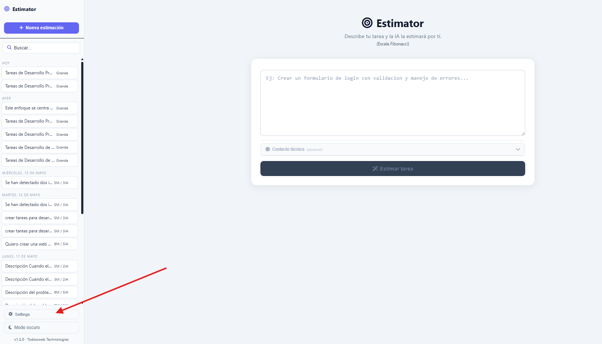
The tool includes a full interactive API documentation at /api/docs. Any developer can browse the available endpoints, read the request/response schemas and try them out directly from the browser.
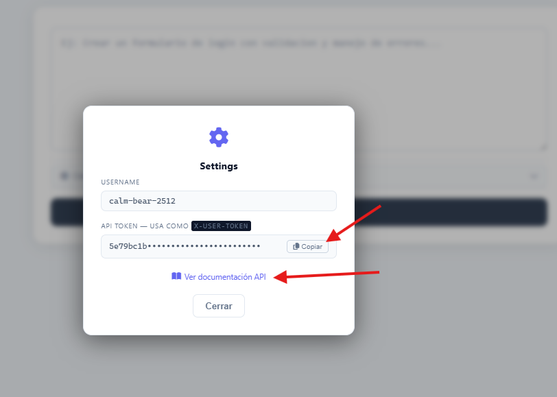
The REST API uses Swagger UI. Click Try it out on any endpoint, fill in the parameters and execute — the real response from the AI engine is shown inline. Your token is pre-injected automatically.
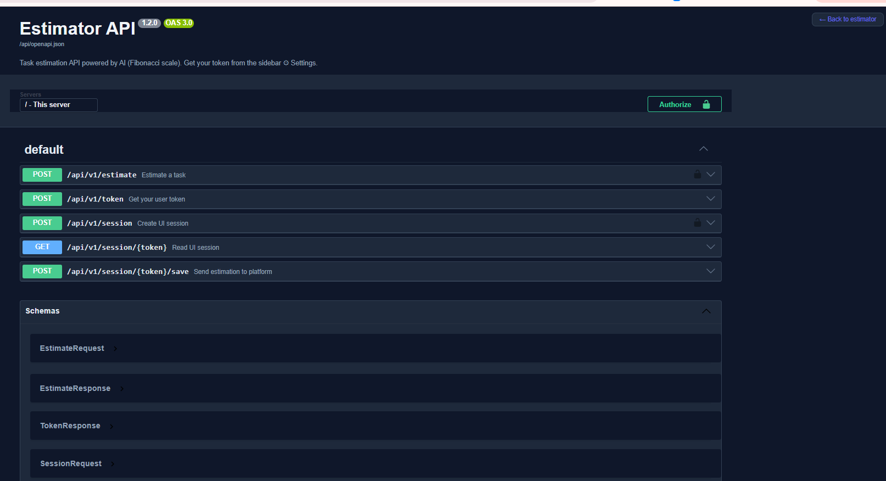
In Odoo go to Settings → Project → Task Estimator. Enter the URL of the estimator server and paste the API token you copied from the Settings panel.
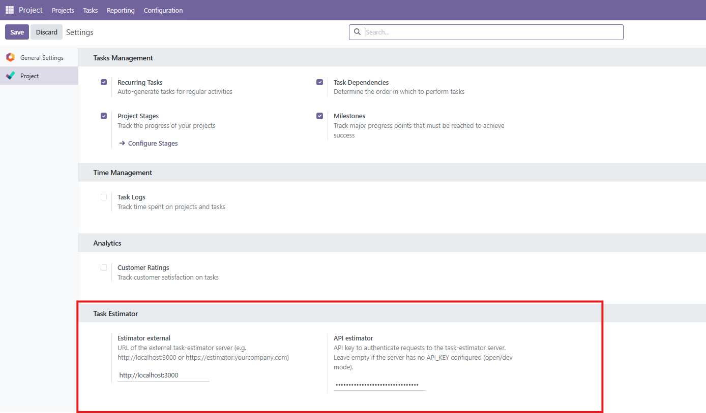
The estimator can also be used as a standalone web tool — type any task description, optionally add the technology context, and click Estimate. Results include story points, time estimates, reasoning and a step-by-step guide.
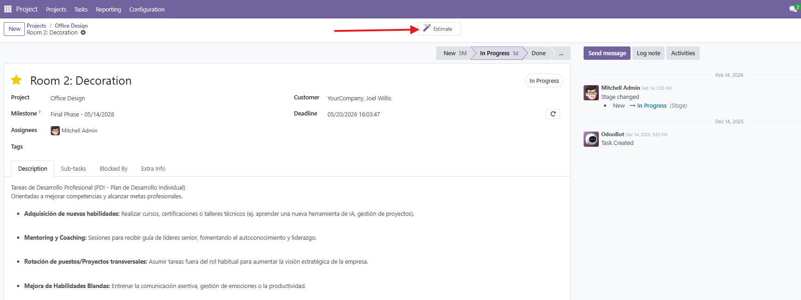
When opened from an Odoo task, the description is pre-loaded automatically. The estimator opens with the task content already in the text area — no copy-paste needed.
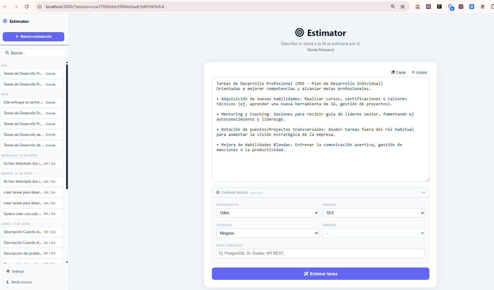
After the estimation is complete, click Send to Odoo to save the result. The estimation is sent directly to your Odoo instance — story points, reasoning and steps are all recorded.
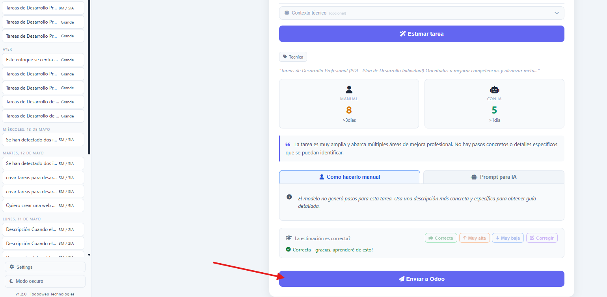
The estimation is saved in the task: the smart button shows manual / AI story points, and a note is posted in the chatter with the full breakdown — reasoning, steps and time estimates.
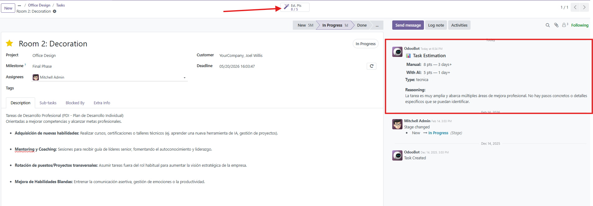
When a task has been estimated before, clicking the smart button opens the estimator with the previous result pre-loaded. The button label changes to Re-estimate so you can review and update the estimation at any time.
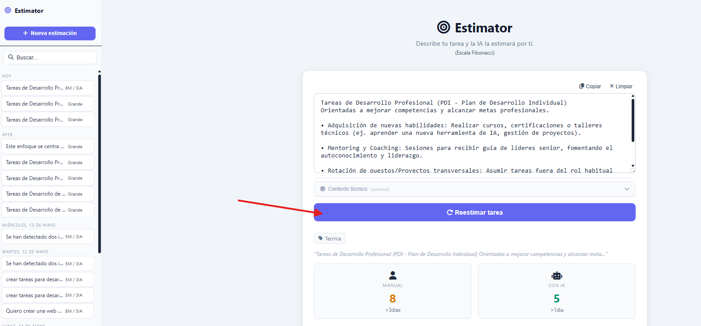
The knowledge base learns from validated estimations. When a similar task is found (similarity > 92%), the result is returned instantly — in milliseconds, without calling the AI model. The badge shows similarity percentage and how many times it has been used.
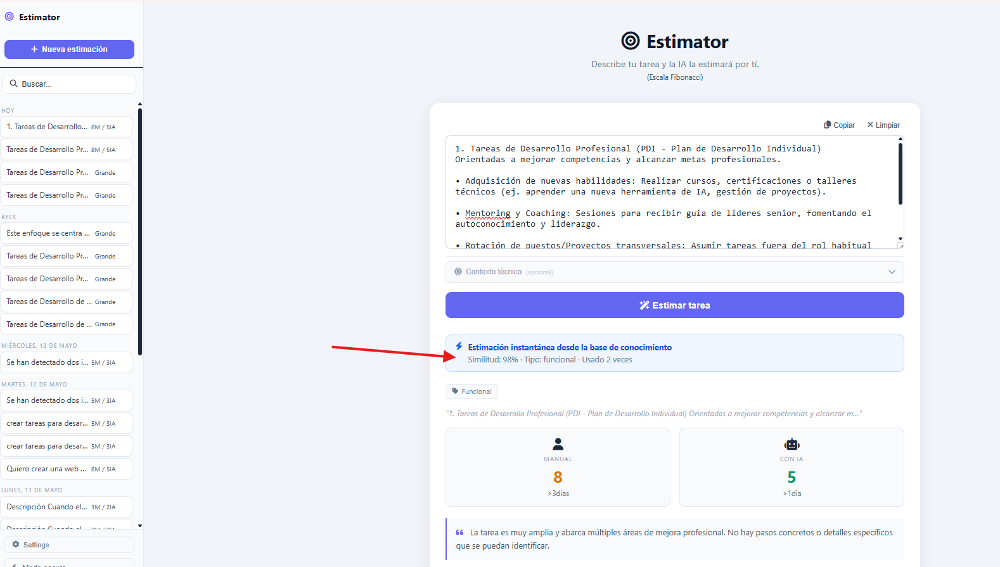
Every estimation saved to Odoo is recorded in the task chatter with the full detail: story points, time estimates, reasoning and manual implementation steps. Complete traceability of all estimations over time.
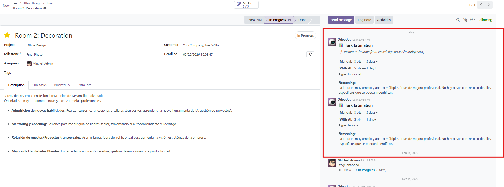
If you face any issues while using our app and the issue is arising due to our app, we provide you complementary support for a duration of 90 days from the date of purchase.
To create a support ticket, you can do it through the channels that we make available to you.